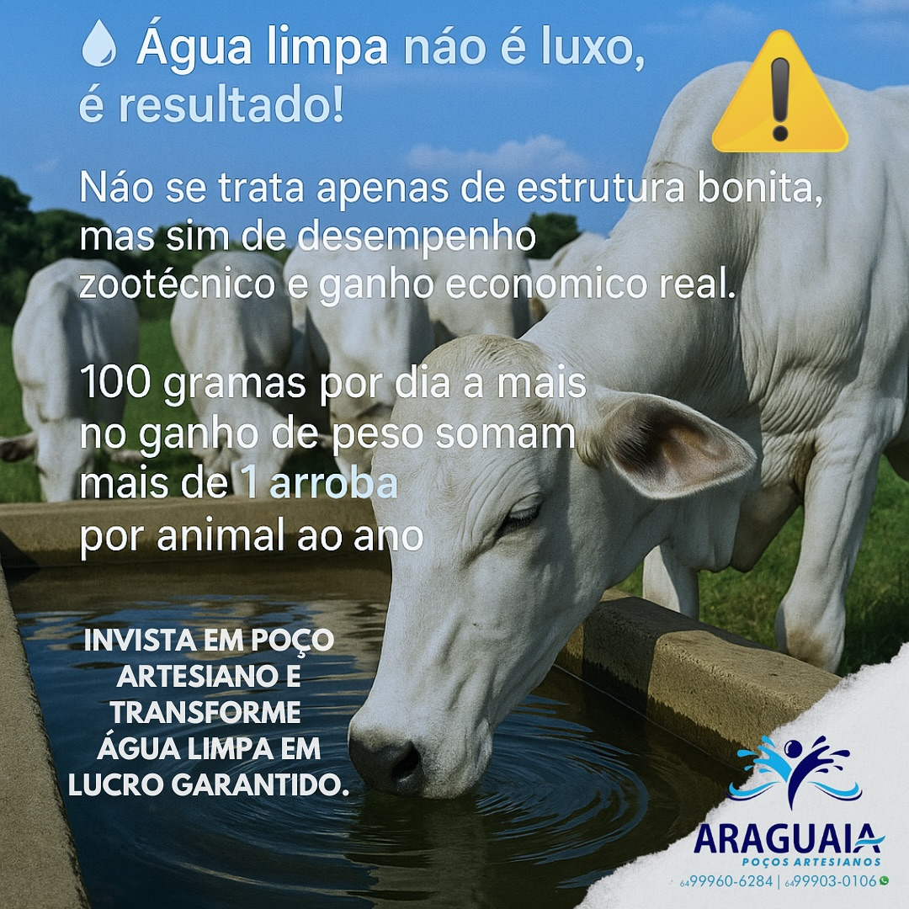
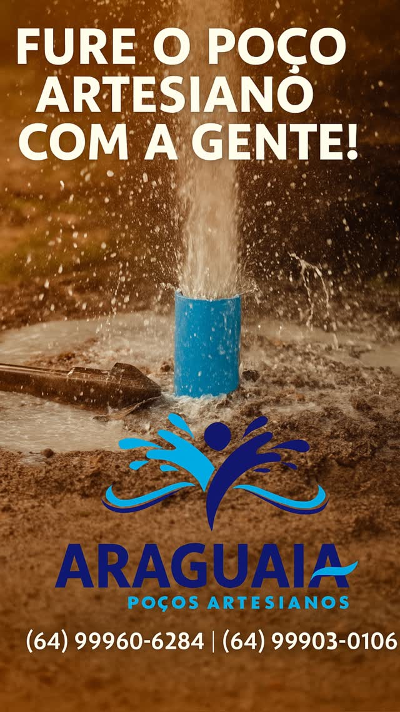
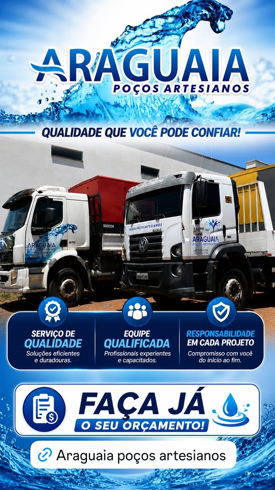
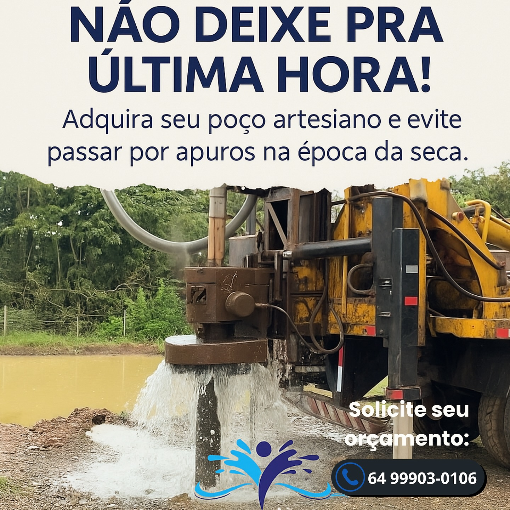
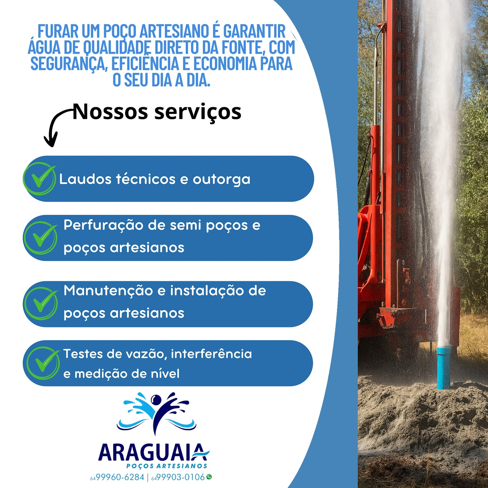
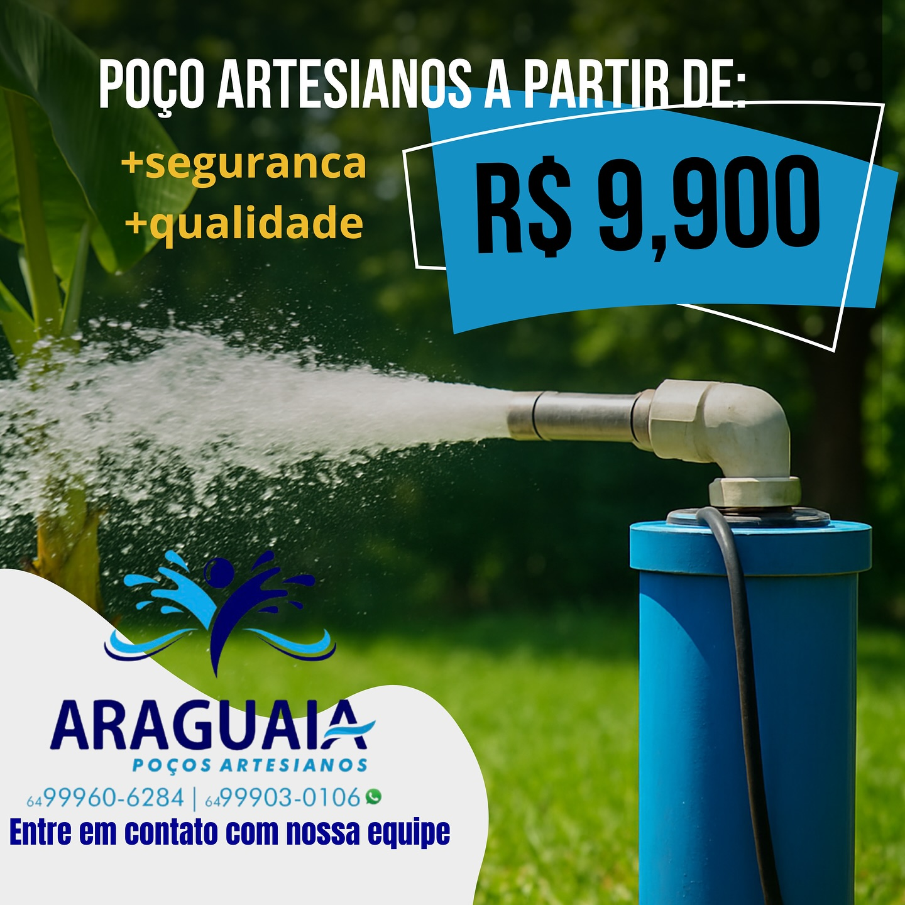
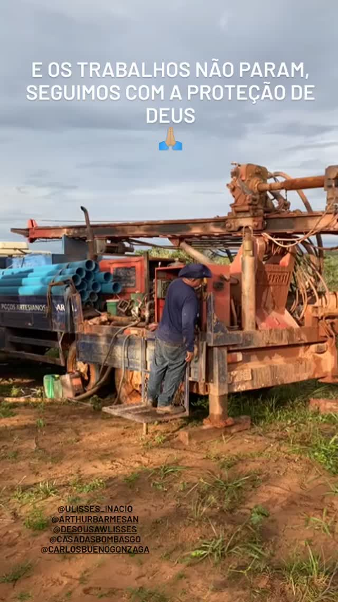
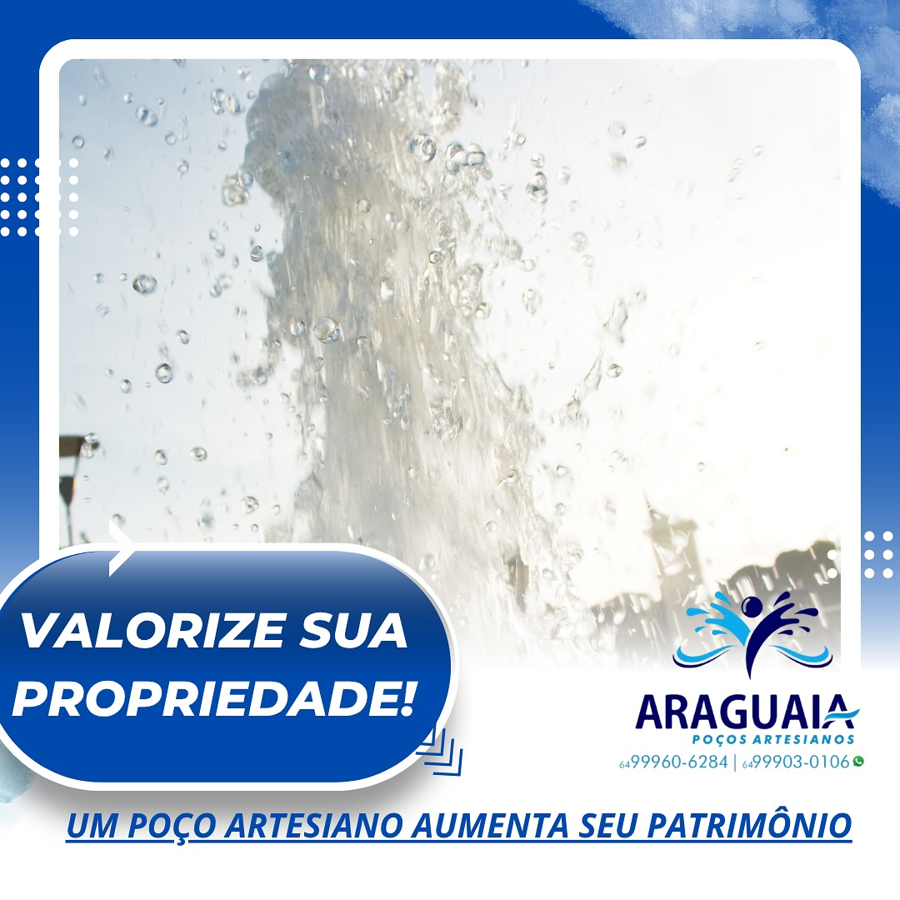
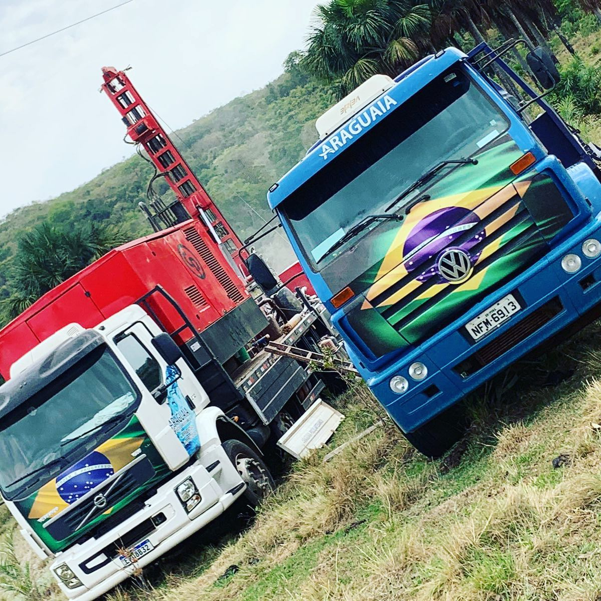

Somos uma das únicas empresas em Goiás e Mato Grosso que entrega garantia técnica de execução formalizada em contrato. Geólogo responsável (CREA), ART e laudo técnico inclusos em toda perfuração.
Solicitar orçamento grátis →Investimento transparente, sem surpresas.
Independência de água para sua família. Tudo incluso.

Vazão alta para irrigação, gado e abastecimento rural.

Soluções para postos, indústrias, condomínios e loteamentos.

Mais de 800 poços perfurados em Goiás e Mato Grosso. Equipamentos próprios, equipe treinada e geólogo responsável vinculado ao perfil técnico da empresa.
Não terceirizamos — tudo é executado e acompanhado pela nossa equipe, do orçamento à entrega do laudo final.
A Araguaia Poços Artesianos é uma empresa com 2 sedes — Iporá-GO e Barra do Garças-MT — especializada em soluções técnicas de perfuração para residências, propriedades rurais, indústrias e empreendimentos comerciais.
Atendemos Goiás e Mato Grosso com equipe própria, equipamentos modernos e geólogo responsável registrado no CREA em cada projeto. Compromisso com qualidade técnica, documentação completa e cumprimento de prazos.
Preencha o formulário ou chame no WhatsApp. Em 2h enviamos proposta.
Nossa equipe avalia o terreno e define ponto e profundidade ideal.
Equipamentos próprios na obra, cronograma fechado e acompanhamento.
Testes de vazão, laudo, ART e orientação para outorga ambiental.
Acompanhe nossas peças de comunicação e veja por que somos referência em poços artesianos.






Resolveu o problema de água da minha fazenda. Equipe pontual e entregou tudo com laudo técnico assinado.
Atendimento rápido e preço justo. Em duas semanas tinha água. Recomendo para quem quer poço sério com garantia em contrato.
Contratei pela garantia técnica em contrato. Outras só prometiam de boca, só a Araguaia entregou papel assinado.
Depende da profundidade, tipo de solo e finalidade. Residenciais começam a partir de R$ 9.900. Para sítio, fazenda ou indústria, valor personalizado conforme área e vazão.
Em média 5 a 15 dias úteis a partir da visita técnica, dependendo da profundidade e tipo de terreno.
Sim. Laudo técnico de vazão e ART assinada por profissional registrado no CREA — essencial para outorga junto à Semad/GO, Sema/MT e demais órgãos.
Atendemos Goiás e Mato Grosso, com sedes em Iporá-GO e Barra do Garças-MT.
Capacidade técnica de até 400 metros na rocha. Atendemos terrenos onde outras empresas não conseguem chegar.
Sim. Orientamos sobre o processo e fornecemos toda documentação técnica necessária.
Sim. Condições personalizadas — fale com nosso consultor pelo WhatsApp.
Orçamento gratuito e sem compromisso. Geólogo responsável e equipamentos próprios.